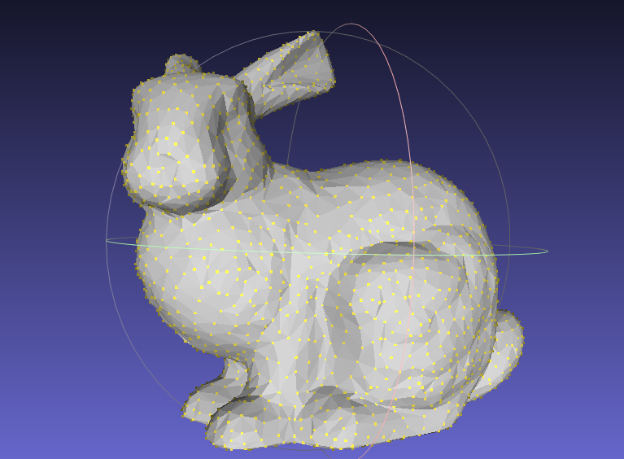
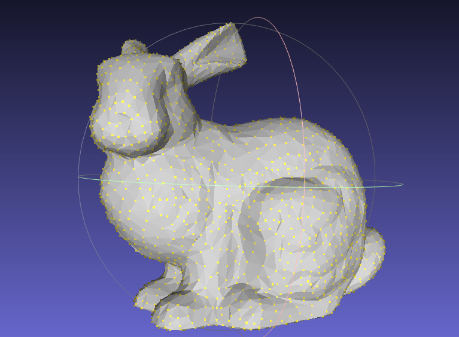
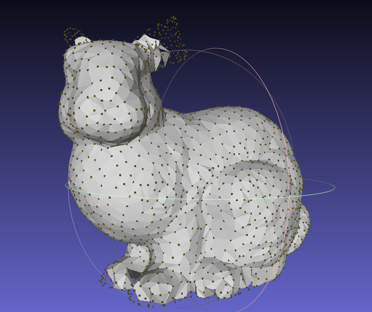
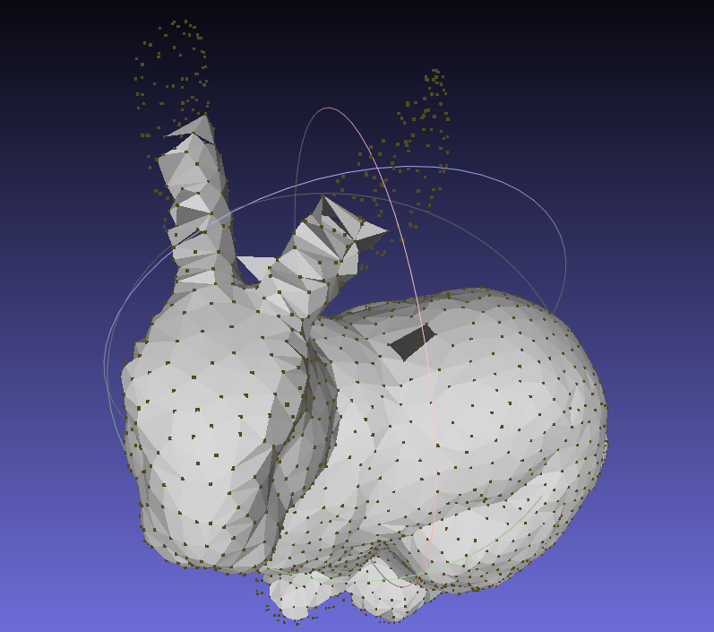
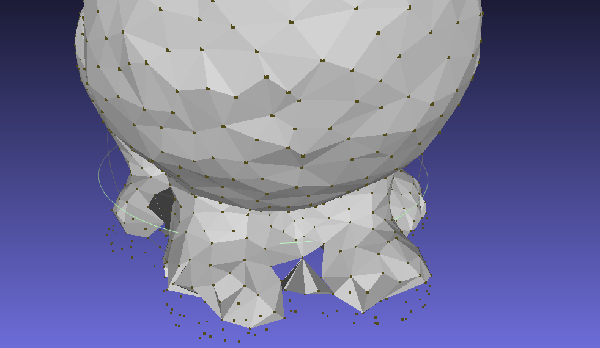
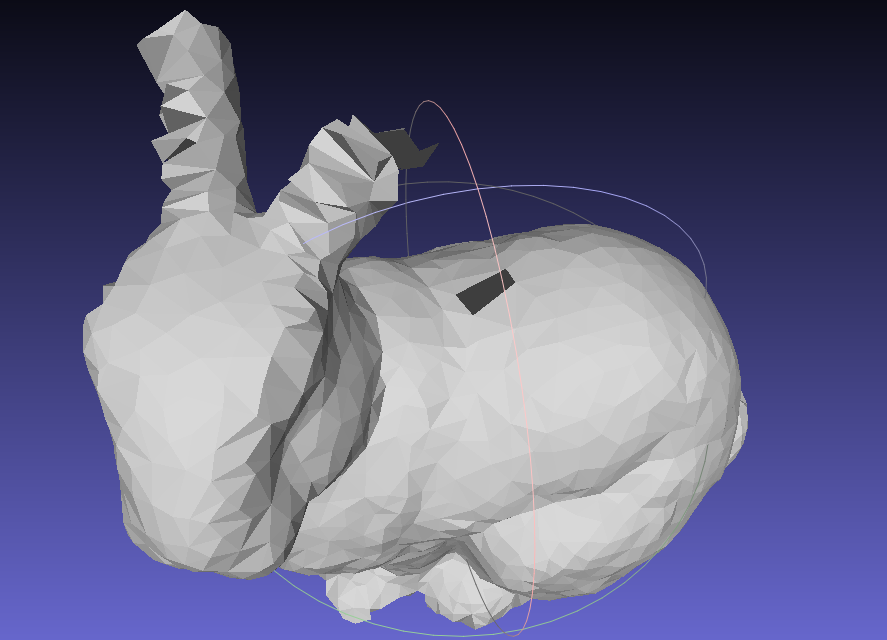

|

|

|
| Yinghao | zhangyinghao@berkeley.edu |
| Yifan Wang | wyf020803@berkeley.edu |
| Tianzhe Chu | chutzh@berkeley.edu |
| Xueyang Yu | yuxy@berkeley.edu |
Our proposed project aims to implement the conversion from point cloud to mesh formats. By implementing this conversion process, we aim to enhance the flexibility and compatibility of 3D object representation in various applications, enabling users to work with the format that suits their needs best.
In computer graphics, a point cloud is a set of points in a 3D space, while a mesh is a set of triangles.
The ability to convert between point cloud and mesh formats is essential as certain applications require a specific format. For example, point clouds are commonly used for capturing 3D data from real-world objects, while meshes are often used for rendering and animation purposes.
Converting one format to the other requires a fundamental change in the data structure, which can be complex and computationally expensive. Besides, the conversion process may result in a loss of information or introduce artifacts, which is undesirable when we persue an equivalent conversion.
To achieve this goal, we plan to implement an existing algorithm that can accurately convert between point cloud and mesh formats. Specifically, we plan to implement the more challenging paper mentioned in the Final Project Idea.
We plan to develop a robust and efficient algorithm for converting point cloud to mesh and mesh to point cloud formats. The algorithm should be accurate and reliable. We plan to use Python to implement it to fully utilize the computational resources in an easy way. Another goal is to reduce data loss and introduce minimal artifacts during the conversion process. The converted data should maintain its original quality, including texture, curvature, and features, as much as possible.
At last, optimize the conversion process to improve its performance and reduce computational complexity. This optimization should be achieved through techniques such as surface reconstruction and mesh simplification, minimizing the loss of data and improving the quality of the output.
To measure the performance, we will compute: Hausdorff distance between our result and the reference data, running time, and scalability of our algorithm by measuring its performance on datasets of varying sizes.
We will document the algorithm development process, including the research, implementation, optimization, and evaluation, in a report or paper. The documentation will enable others to understand and replicate our work.
We also plan to extend the baseline plan to achieve the following goals:
Our expectations are as follows:
We firstly use the original mesh as input to generate a point cloud. The input and the output are both in .obj format, which is shown in the following figure.
|

|
|
After that, we use the point cloud as input to reconstruct a mesh, which is the most challenging part of this project. The simple idea is that we will use set a hyperparameter r to construct a sphere, which will be limited by 3 points, and then we will use the points to construct a face. By rolling the sphere in the point cloud, we will get a mesh. We can control the the number of faces we wish to get. The following figure shows the result of different number of faces.

|

|
Clearly, with more faces generated, the mesh will be more accurate. But we can find even with 4400 faces, we still cannot get a perfect mesh. Compare with the original mesh, we can find that the main body, which is more smooth and continuous, is more easy to reconstruct. While the small details, such as the ears or the feet, are more difficult to reconstruct.

|

|

|
By analysis, we can find the following problems:
|

|
|